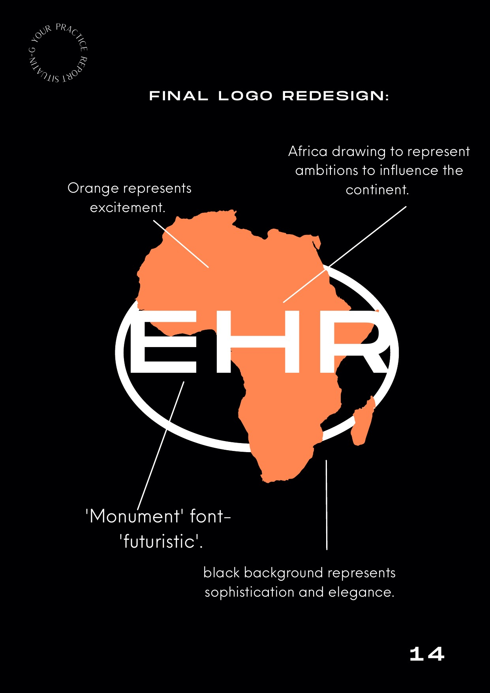

← Back to WorkIn 2022, I completed my placement year with Event Hotline Rentals (EHR), a black-owned Ghana-based agency established in 2005 with a focus on PR, events, and luxury. Based in Accra on Amar Kwarteng Street, EHR operates across two divisions: Event Hotline (the main agency) and Event Hotline Rentals (a rental supplies business serving the events industry). The agency donates a percentage of its annual proceeds to developing villages in Ghana.
My role was Social Media Manager Assistant, brought in as part of a broader rebrand effort. EHR wanted to reposition themselves as a contemporary agency to expand their client portfolio and reflect the digitalization the agency had undergone. I was one of three interns and was the only intern working remotely from the UK at the start of the placement.
The placement gave me my first experience of real international agency life, managing multiple concurrent tasks, working to tight deadlines, adapting to a different professional culture, and using creative software skills I had developed at UAL in a live commercial context.